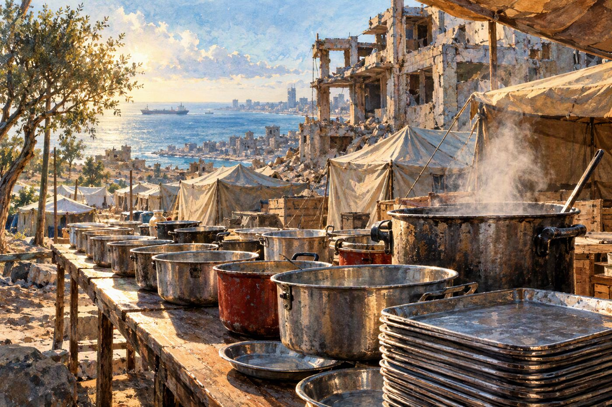

Un buque de gas licuado en llamas en un estrecho al atardecer. Ilustración: Geojournalnews.
EE. UU. vs. Irán
Irán confirma que atacó el buque de gas NV Sunshine y amenaza con perseguir barcos «en toda la región»
La Guardia Revolucionaria dice que ya no limitará sus operaciones al estrecho de Ormuz.
Estrecho de Ormuz · 1 min de lectura
La Armada de la Guardia Revolucionaria iraní afirmó el viernes, en un comunicado recogido por la agencia Tasnim, que el gran buque de gas licuado NV Sunshine fue alcanzado cuando intentaba cruzar por la que Teherán llama «ruta ilegal» al sur del estrecho de Ormuz, y que sufrió un incendio de grandes dimensiones en la sala de máquinas y en el sistema de propulsión. No informó de víctimas ni del tipo de arma empleada.
Rusia vs. Ucrania
Witkoff califica de «constructivas» las seis horas de conversaciones con Ucrania en Miami
Los participantes buscan cerrar un documento para presentarlo a Rusia antes del invierno.
Conflicto israelí
Un año de tregua en Gaza: 1.471 palestinos muertos y 5.189 heridos sin pasar a la segunda fase
El alto el fuego entró en vigor el 10 de octubre de 2025.
Mundo y clima
Un terremoto de magnitud 7,6 sacude Panamá y provoca evacuaciones masivas en la capital
Una réplica de 6,9 y decenas de temblores mantienen la alerta.
Los tres frentes, en una línea
EE. UU. vs. Irán
Irán amplía su amenaza a toda la región mientras Putin le dice a Trump que la paz es posible; Yemen lucha por Bab el Mandeb.
TN8 anunció que la onda tropical 43 ingresaría entre sábado y domingo, con lluvias en distintas regiones.
Servicios y combustibles
Cortes de luz programados en zonas de Managua este fin de semana. El INE no había publicado el ajuste de combustibles al cierre de esta edición.
Nota del editor
Hoy publicamos 35 noticias: 10 con ilustración propia y 25 con infografía. Es un sábado con menos información verificable, sobre todo de Nicaragua; varias notas se basan solo en titulares y así lo indicamos.
La Redacción
Mercados
Cierre del viernes 9 de octubre · minigráfico: cierres del 8 y 9
Dow Jones
51.654,95
+0,83 %
S&P 500
7.811,54
+0,59 %
Nasdaq
27.366,17
+0,64 %
IPC México
66.048,57
+1,63 %
Oro (contado)
4.194 $
+1,47 %
Plata (contado)
60,82 $
+2,77 %
Michigan inflación 1 año
4,7 %
+0,1 pp
Tipo de cambio BCN
C$ 36,62
fijo
Las bolsas no abren en fin de semana; la próxima sesión es el lunes 12.
Cómo cerró la semana
Rebote el viernes liderado por la tecnología y alivio en el petróleo tras la promesa de Trump sobre Irán. El S&P 500 sumó un 1,15 % semanal.
La BMV superó los 66.000 puntos por primera vez desde agosto.
Qué vigilar el lunes
La amenaza iraní de perseguir buques en todo el Golfo.
El acuerdo anunciado sobre diésel ruso.
Expectativas de inflación al alza (4,7 %).
Bonos en máximos de varias décadas.
Impacto en Nicaragua
Combustibles: la nueva amenaza en el Golfo puede volver a presionar el crudo.
Córdoba: sin cambios, por la tasa fija del BCN.
Fuentes: El CEO · Bolsamanía. No son recomendaciones de inversión.
EE. UU. vs. Irán
6 noticias
EE. UU. vs. Irán
Putin dice a Trump que EE. UU. e Irán «pueden y deben» llegar a un acuerdo de paz
Moscú · Washington · 1 min de lectura
En una conversación telefónica de 90 minutos, el presidente ruso aseguró a Trump que el potencial de la diplomacia con Irán está lejos de haberse agotado, según el asesor del Kremlin Yuri Ushakov. Putin le recordó que el jueves se reunió…
EE. UU. vs. Irán
El Tesoro calcula que a Irán le quedan unos 20 millones de barriles flotando fuera del bloqueo
Washington · 1 min de lectura
Al detallar las sanciones del jueves contra 17 buques y 17 empresas, un funcionario del Tesoro estimó que Irán conserva unos 20 millones de barriles de crudo en barcos fuera del cerco naval, según Infobae. Solo dos de los barcos…
EE. UU. vs. Irán
El Gobierno de Yemen lanza una «vasta operación» con apoyo saudí para retomar Bab el Mandeb
Bab el Mandeb · Yemen · 1 min de lectura
Las fuerzas del Gobierno yemení reconocido internacionalmente, con apoyo de la aviación saudí, lanzaron el viernes una operación para recuperar el estrecho de Bab el Mandeb, según una fuente militar citada por El Periódico. Los hutíes…
EE. UU. vs. Irán
Arabia Saudí pide al Consejo de Seguridad actuar ante la «peligrosa escalada» en Yemen
Nueva York · 1 min de lectura
El embajador saudí ante la ONU, Abdulaziz al-Wasil, pidió al Consejo de Seguridad abordar la escalada en Yemen y denunció ataques hutíes contra civiles, el reclutamiento de niños soldados y los ataques contra aeropuertos saudíes, incluido…
EE. UU. vs. Irán
Mueren dos policías en un ataque contra una patrulla en el sureste de Irán
Sureste de Irán · 1 min de lectura
Dos policías murieron en un ataque contra una patrulla en el sureste de Irán, según un titular de DW recogido por 24horas.
Rusia vs. Ucrania
3 noticias
Rusia vs. Ucrania
Trump anuncia un acuerdo con Moscú para suministrar diésel ruso al mercado estadounidense y mundial
Washington · 1 min de lectura
Al margen de las conversaciones de Miami, Trump dijo que alcanzó un acuerdo con Rusia para el suministro de diésel al mercado estadounidense y global, según AFP. Witkoff no mencionó ese anuncio en su mensaje sobre la reunión.
Rusia vs. Ucrania
Rubio advierte que el estancamiento en Ucrania puede terminar en una escalada hacia países de la OTAN
Lisboa · 1 min de lectura
El secretario de Estado, Marco Rubio, dijo el jueves en Lisboa que la guerra ha llegado a un punto muerto potencialmente explosivo y que, sin acuerdo, la otra salida es una escalada que podría extenderse a países vecinos miembros de la…
Conflicto israelí
4 noticias

Conflicto israelí
La lucha por comer persiste en Gaza: 1,4 millones de personas en inseguridad alimentaria aguda
Jan Yunis · 1 min de lectura
Un año después de la tregua, unas 1,4 millones de los 2,1 millones de habitantes de Gaza siguen en inseguridad alimentaria aguda y 200.000 rozan el umbral de la hambruna, dijo a la AFP Shaun Hughes, del Programa Mundial de Alimentos, que…
Conflicto israelí
Más de 100 ONG denuncian que el alto el fuego en Gaza «existe solo sobre el papel»
Gaza · 1 min de lectura
Amnistía Internacional, Save the Children, Oxfam, el Consejo Noruego para Refugiados y más de un centenar de organizaciones afirmaron en un comunicado conjunto que las fuerzas israelíes siguen matando e hiriendo a palestinos a diario y que…
Conflicto israelí
Netanyahu afirma que Israel ha eliminado a 4.000 de los 6.000 milicianos de Hamás implicados en el 7 de octubre
Jerusalén · 1 min de lectura
En el aniversario del ataque de 2023, el primer ministro israelí aseguró que 4.000 de los 6.000 «monstruos de Hamás» habían sido eliminados y prometió matar a todos los involucrados, según la AFP. La cifra no ha sido verificada de forma…
Nicaragua
11 noticias
Nicaragua
Laureano Ortega anuncia que fábricas de Bielorrusia ensamblarán maquinaria en Nicaragua
Managua · Minsk · 1 min de lectura
El hijo de los copresidentes, Laureano Ortega Murillo, dijo que el próximo año fábricas de Bielorrusia ensamblarán maquinaria en Nicaragua para distribuirla desde aquí al resto de la región, según La Prensa.
Nicaragua
El Minsa paga más de 147 millones de córdobas por el hospital de Acoyapa, con un 26 % de avance
Acoyapa · Chontales · 1 min de lectura
La delegada del Ministerio de Salud en Acoyapa aseguró que la construcción del hospital presenta un 26 % de avance y que se espera inaugurarlo en diciembre, según La Prensa, que informa de pagos de más de 147 millones de córdobas por la…
Nicaragua
El Ejército captura a 10 personas y desmantela minería ilegal en la Reserva Indio Maíz
Reserva Indio Maíz · 1 min de lectura
Tropas del Ejército de Nicaragua capturaron a 10 personas y neutralizaron actividades de minería ilegal en la Reserva Biológica Indio Maíz, según Canal 10. En los operativos decomisaron dos armas de fuego y una embarcación.
Nicaragua
Nicaragua obliga a los negocios turísticos a advertir del riesgo de cruzar ríos tras la muerte de tres jóvenes
Chinandega · 1 min de lectura
Las autoridades implementaron medidas obligatorias de alerta para turistas extranjeros: los establecimientos turísticos deberán informar sobre los riesgos de cruzar ríos, según Canal 10. La decisión llega después de que tres mujeres —dos…
Nicaragua
EE. UU. negará el asilo a ciudadanos de la UE y de países democráticos, lo que afectaría a nicaragüenses desnacionalizados
Washington · 1 min de lectura
Según La Prensa, Estados Unidos denegará el asilo a ciudadanos de la Unión Europea y de países democráticos, una medida que afectaría a nicaragüenses desnacionalizados por el régimen que adoptaron la nacionalidad española.
Nicaragua
La investigación sobre los autores intelectuales del asesinato de Roberto Samcam puede reabrirse con nuevas pruebas
San José · 1 min de lectura
El archivo fiscal en Costa Rica sobre la autoría intelectual del asesinato del exmilitar y opositor nicaragüense Roberto Samcam no es definitivo y el caso puede reabrirse si surgen nuevas pruebas, según La Prensa.
Nicaragua
Defensores de derechos humanos piden acusar a Ortega por tortura tras los cargos de EE. UU. contra Maduro
Managua · 1 min de lectura
Defensores nicaragüenses de derechos humanos pidieron a la comunidad internacional acusar a Daniel Ortega por tortura, tras la imputación en Nueva York contra Nicolás Maduro y Cilia Flores por conspiración para cometer torturas, según La…
Nicaragua
EE. UU. mantiene a Nicaragua en nivel 3 de alerta de viaje y advierte de ofertas laborales en Rusia
Washington · 1 min de lectura
Estados Unidos mantiene a Nicaragua en el nivel 3 («reconsiderar el viaje») de su alerta de viajes y advierte sobre ofertas laborales en Rusia, según un video de 100% Noticias.
Nicaragua
ICE sigue reteniendo a un nicaragüense con asilo aprobado, a días del parto de su esposa
Texas · 1 min de lectura
Un nicaragüense al que se le aprobó el asilo sigue retenido por ICE en Texas, a pocos días de que su esposa dé a luz, según 100% Noticias.
Nicaragua
El Banco Central revela un cambio en la forma de pagar de los nicaragüenses
Managua · 1 min de lectura
Un informe del Banco Central de Nicaragua revela un cambio en los medios de pago que usan los nicaragüenses, según 100% Noticias, que se pregunta si el efectivo «tiene los días contados».
Nicaragua
Cómo leer el recibo de luz en Nicaragua y detectar qué encarece el servicio
Managua · 1 min de lectura
100% Noticias publicó una guía para leer la factura eléctrica: las lecturas del medidor, los subsidios y los cargos adicionales que pueden encarecer el recibo, y cuándo corresponde pedir una revisión.
Política
2 noticias
Política
Pedro Sánchez convoca elecciones anticipadas en España tras un revés en el Congreso
Madrid · 1 min de lectura
El presidente del Gobierno español, Pedro Sánchez, convocó elecciones anticipadas tras sufrir un revés en el Congreso, según 100% Noticias.
Política
EE. UU. advierte que China presionó a diputados del Parlacen por la visita del canciller taiwanés
Ciudad de Guatemala · 1 min de lectura
Estados Unidos advirtió que China presionó a diputados del Parlamento Centroamericano por la visita del canciller de Taiwán, según 100% Noticias.
Economía
5 noticias
Economía
Wall Street cierra la semana en verde; el S&P 500 sube un 1,15 % semanal
Nueva York · 1 min de lectura
El viernes, el S&P 500 avanzó un 0,59 % hasta 7.811,54 puntos, el Nasdaq un 0,64 % hasta 27.366,17 y el Dow Jones un 0,83 % hasta 51.654,95, según El CEO. En la semana, el S&P 500 ganó un 1,15 %, el Dow un 0,93 % y el Nasdaq un 0,64 %.
Economía
La Bolsa Mexicana supera los 66.000 puntos por primera vez desde agosto
Ciudad de México · 1 min de lectura
El IPC subió un 1,63 % el viernes hasta 66.048,57 puntos y acumuló un 2,35 % en la semana; no superaba los 66.000 puntos desde el 26 de agosto, según El CEO. Grupo México lideró con un 5,09 % y América Móvil fue la peor, con −2,77 %.
Economía
Las expectativas de inflación en EE. UU. suben al 4,7 %, su nivel más alto desde mayo
Ann Arbor · 1 min de lectura
La lectura preliminar de octubre de la Universidad de Michigan situó las expectativas de inflación a 12 meses en el 4,7 %, frente al 4,6 % de septiembre; es el segundo mes de alza y el nivel más alto desde mayo, según Bolsamanía.
Economía
SpaceX compra espectro en EE. UU. para entrar en la telefonía móvil con Starlink
Hawthorne · 1 min de lectura
SpaceX anunció el jueves un acuerdo para comprar una cartera de espectro en Estados Unidos con el que busca ofrecer telefonía propia a través de su división Starlink, según El CEO. Su acción subió un 1,26 % el viernes, hasta 162,60 dólares.
Economía
Paramount cierra la compra de Warner Bros. Discovery
Nueva York · 1 min de lectura
Paramount concretó la adquisición de Warner Bros. Discovery y suma importantes marcas del entretenimiento, según Canal 10.
Mundo y clima
3 noticias
Mundo y clima
El huracán Isaías toca tierra como categoría 2 en la costa estadounidense del golfo de México
Costa del golfo de México (EE. UU.) · 1 min de lectura
Isaías tocó tierra la noche del viernes como huracán de categoría 2 en la costa de Estados Unidos del golfo de México, según el Centro Nacional de Huracanes, citado por La Prensa. El jueves había alcanzado la categoría 3.
Mundo y clima
El Salvador declara emergencia por seis meses por una sequía que amenaza los alimentos
San Salvador · 1 min de lectura
La sequía amenaza la producción de alimentos en El Salvador y obligó a declarar una emergencia por seis meses, según 100% Noticias.
Deportes Nicaragua
1 noticias
Deportes Nicaragua
Granada recibe hoy a Rivas en el cuarto juego de la final del Pomares, con el Frente Sur arriba 2-1
Granada · 1 min de lectura
La serie final se reanuda este sábado a las 2:00 p. m. en el estadio Roque Tadeo Zavala de Granada. Rivas lidera 2-1 tras ganar el viernes 1-0 con un hit de Renato Morales en el cierre del noveno ante el relevista Leonardo Crawford; Carlos…
Si solo recuerdas tres cosas de hoy
Ormuz se agranda: la Guardia Revolucionaria amenaza con perseguir buques en todo el Golfo justo cuando el crudo volvía a fluir.
Diplomacia en paralelo: Miami avanza un texto para Ucrania y Putin empuja un acuerdo entre EE. UU. e Irán.
Región sacudida: un sismo de 7,6 en Panamá, Isaías en el golfo de México y sequía en El Salvador.
Fe de erratas: sin correcciones a la edición del 9 de octubre.
GEOJOURNALNEWS
EE. UU. vs. Irán
Irán confirma que atacó el buque de gas NV Sunshine y amenaza con perseguir barcos «en toda la región»
La Guardia Revolucionaria dice que ya no limitará sus operaciones al estrecho de Ormuz.
Estrecho de Ormuz · 1 min de lectura
Un buque de gas licuado en llamas en un estrecho al atardecer. Ilustración: Geojournalnews.
La Armada de la Guardia Revolucionaria iraní afirmó el viernes, en un comunicado recogido por la agencia Tasnim, que el gran buque de gas licuado NV Sunshine fue alcanzado cuando intentaba cruzar por la que Teherán llama «ruta ilegal» al sur del estrecho de Ormuz, y que sufrió un incendio de grandes dimensiones en la sala de máquinas y en el sistema de propulsión. No informó de víctimas ni del tipo de arma empleada.
El cuerpo militar advirtió que, a partir de ahora, cualquier buque que use una ruta no autorizada será perseguido «en toda la región», amenazó con sancionar a las navieras que se dejen «engañar» por Estados Unidos y responsabilizó a Washington de la escalada. Según DW, el flujo de petróleo por Ormuz se acerca a los niveles previos a la guerra, lo que convierte esta amenaza en una ampliación relevante del área de riesgo para el comercio energético.
Putin dice a Trump que EE. UU. e Irán «pueden y deben» llegar a un acuerdo de paz
Rusia mantiene su oferta de recibir el uranio enriquecido iraní.
Moscú · Washington · 1 min de lectura
Dos teléfonos sobre escritorios, con Teherán y Washington al fondo. Ilustración: Geojournalnews.
En una conversación telefónica de 90 minutos, el presidente ruso aseguró a Trump que el potencial de la diplomacia con Irán está lejos de haberse agotado, según el asesor del Kremlin Yuri Ushakov. Putin le recordó que el jueves se reunió con el presidente iraní, Masud Pezeshkian, y le transmitió que Teherán hace «intentos reales» de poner fin al conflicto.
Ushakov añadió que sigue en pie la propuesta rusa de trasladar a Rusia el uranio enriquecido iraní como salida al punto muerto. La llamada llega un día después de que Trump prometiera no atacar Irán antes de las legislativas del 3 de noviembre.
El Tesoro calcula que a Irán le quedan unos 20 millones de barriles flotando fuera del bloqueo
Washington · 1 min de lectura
Infografía: Geojournalnews, con datos de Infobae.
Al detallar las sanciones del jueves contra 17 buques y 17 empresas, un funcionario del Tesoro estimó que Irán conserva unos 20 millones de barriles de crudo en barcos fuera del cerco naval, según Infobae. Solo dos de los barcos sancionados, el Tina 5 y el Shenzhen, llevaban crudo; el resto transportó gas licuado, nafta, metanol, fueloil o betún. El Shenzhen, con bandera camerunesa, habría movido más de 3,5 millones de barriles desde noviembre de 2025.
Diez de las navieras están registradas en las Islas Marshall y seis tienen sede en China o Hong Kong. El Tesoro retiró además de su lista dos buques, el Hakuna Matata y el Pinocchio, tras ser vendidos a operadores no sancionados, y lo presentó como prueba de que las sanciones se levantan cuando cambia la conducta.
El Gobierno de Yemen lanza una «vasta operación» con apoyo saudí para retomar Bab el Mandeb
Bab el Mandeb · Yemen · 1 min de lectura
Infografía: Geojournalnews, con datos de El Periódico.
Las fuerzas del Gobierno yemení reconocido internacionalmente, con apoyo de la aviación saudí, lanzaron el viernes una operación para recuperar el estrecho de Bab el Mandeb, según una fuente militar citada por El Periódico. Los hutíes afirmaban haberse apoderado del paso a mediados de septiembre.
Bab el Mandeb conecta el mar Rojo con el golfo de Adén y es la vía de acceso al canal de Suez, por lo que su control afecta al comercio entre Europa y Asia.
Arabia Saudí pide al Consejo de Seguridad actuar ante la «peligrosa escalada» en Yemen
Nueva York · 1 min de lectura
Infografía: Geojournalnews, con datos de El Periódico.
El embajador saudí ante la ONU, Abdulaziz al-Wasil, pidió al Consejo de Seguridad abordar la escalada en Yemen y denunció ataques hutíes contra civiles, el reclutamiento de niños soldados y los ataques contra aeropuertos saudíes, incluido el del jueves contra el aeropuerto Rey Khalid de Riad.
Al-Wasil advirtió que las amenazas a la navegación en el mar Rojo y Bab el Mandeb afectan a la paz y la seguridad internacionales, y aseguró que Riad no permitirá que Yemen se convierta en una plataforma de amenazas contra su seguridad.
Witkoff califica de «constructivas» las seis horas de conversaciones con Ucrania en Miami
Los participantes buscan cerrar un documento para presentarlo a Rusia antes del invierno.
Miami · 1 min de lectura
Infografía: Geojournalnews, con datos de Infobae, Swissinfo / AFP, Euronews.
Estados Unidos y Ucrania conversaron durante seis horas en Miami sobre energía, exportaciones de grano y garantías de seguridad, según Infobae. El enviado Steve Witkoff habló en X de «conversaciones constructivas», pero no aclaró si la ronda seguiría el sábado como estaba previsto. Asistieron también Jared Kushner, el jefe de gabinete de Ursula von der Leyen y un delegado del secretario general de la OTAN, Mark Rutte.
Una persona al tanto de las conversaciones dijo a Reuters que los participantes quieren cerrar en las próximas semanas un documento para presentarlo a Rusia antes del invierno, que incluiría una posible arquitectura de seguridad entre Europa y Rusia. Las negociaciones directas entre Moscú y Kiev siguen sin reanudarse.
Trump anuncia un acuerdo con Moscú para suministrar diésel ruso al mercado estadounidense y mundial
Washington · 1 min de lectura
Infografía: Geojournalnews, con datos de Swissinfo / AFP, Moncloa.com.
Al margen de las conversaciones de Miami, Trump dijo que alcanzó un acuerdo con Rusia para el suministro de diésel al mercado estadounidense y global, según AFP. Witkoff no mencionó ese anuncio en su mensaje sobre la reunión.
Washington sostiene desde hace semanas que los ataques ucranianos contra refinerías rusas agravan la escasez mundial de diésel y encarecen el combustible en EE. UU. No se conocen los términos del acuerdo anunciado.
Rubio advierte que el estancamiento en Ucrania puede terminar en una escalada hacia países de la OTAN
Lisboa · 1 min de lectura
Infografía: Geojournalnews, con datos de Swissinfo / AFP.
El secretario de Estado, Marco Rubio, dijo el jueves en Lisboa que la guerra ha llegado a un punto muerto potencialmente explosivo y que, sin acuerdo, la otra salida es una escalada que podría extenderse a países vecinos miembros de la OTAN, según AFP.
Washington considera que la preocupación de los europeos por el invierno, los costos de la energía y el impacto financiero de la guerra está dando nuevo impulso a las negociaciones.
Un año de tregua en Gaza: 1.471 palestinos muertos y 5.189 heridos sin pasar a la segunda fase
El alto el fuego entró en vigor el 10 de octubre de 2025.
Gaza · 1 min de lectura
Infografía: Geojournalnews, con datos de Prensa Latina, Europa Press, AFP / Yahoo, ABC Color / EFE.
Desde que entró en vigor el alto el fuego murieron 1.471 palestinos y 5.189 resultaron heridos, según el Ministerio de Salud de Gaza, citado por Prensa Latina y Europa Press. Las cifras mensuales muestran víctimas durante todo el periodo, desde 226 muertos en octubre de 2025 hasta 123 en junio de 2026. La Oficina de Medios del Gobierno de Gaza contabiliza 5.223 violaciones del acuerdo.
Según Europa Press, el plan de 20 puntos de Trump no ha pasado a su segunda fase y no hay contactos directos entre las partes. La AFP señala que el acuerdo permitía a Israel permanecer en el 53 % de la Franja, pero que hoy controla alrededor del 70 %; EFE cifra la ocupación en el 65 %.
La lucha por comer persiste en Gaza: 1,4 millones de personas en inseguridad alimentaria aguda
Jan Yunis · 1 min de lectura
Ollas en una cocina comunitaria entre tiendas y edificios en ruinas. Ilustración: Geojournalnews.
Un año después de la tregua, unas 1,4 millones de los 2,1 millones de habitantes de Gaza siguen en inseguridad alimentaria aguda y 200.000 rozan el umbral de la hambruna, dijo a la AFP Shaun Hughes, del Programa Mundial de Alimentos, que describió la situación como «extremadamente grave». La AFP recoge el caso de una madre de ocho hijos en Jan Yunis que espera seis horas al día en una cocina comunitaria para conseguir la única comida de la familia.
El Cogat, el organismo israelí que gestiona los asuntos civiles en los territorios palestinos, sostiene en cambio que la situación es «estable» y que hay «más que suficiente comida». La ONU declaró hambruna en agosto de 2025 y la levantó en diciembre, tras el alto el fuego.
Más de 100 ONG denuncian que el alto el fuego en Gaza «existe solo sobre el papel»
Gaza · 1 min de lectura
Infografía: Geojournalnews, con datos de Amnistía Internacional.
Amnistía Internacional, Save the Children, Oxfam, el Consejo Noruego para Refugiados y más de un centenar de organizaciones afirmaron en un comunicado conjunto que las fuerzas israelíes siguen matando e hiriendo a palestinos a diario y que las restricciones a la ayuda y a los materiales de reconstrucción impiden la recuperación. Cifran en al menos 324 los niños muertos desde la tregua; otras versiones del comunicado hablan de 327.
Según las organizaciones, ni un solo hospital funciona plenamente y casi dos millones de personas siguen necesitando un techo. Inger Ashing, de Save the Children, dijo que desde el anuncio del alto el fuego ha muerto casi un niño cada día.
Netanyahu afirma que Israel ha eliminado a 4.000 de los 6.000 milicianos de Hamás implicados en el 7 de octubre
Jerusalén · 1 min de lectura
Infografía: Geojournalnews, con datos de AFP / Yahoo.
En el aniversario del ataque de 2023, el primer ministro israelí aseguró que 4.000 de los 6.000 «monstruos de Hamás» habían sido eliminados y prometió matar a todos los involucrados, según la AFP. La cifra no ha sido verificada de forma independiente.
Netanyahu afronta unas reñidas elecciones el 27 de octubre. La AFP recuerda que Hamás sigue presente en Gaza y con armas, y que la transición política prevista en la segunda fase del acuerdo no se ha producido.
Laureano Ortega anuncia que fábricas de Bielorrusia ensamblarán maquinaria en Nicaragua
Managua · Minsk · 1 min de lectura
Tractores en una nave de ensamblaje con un volcán al fondo. Ilustración: Geojournalnews.
El hijo de los copresidentes, Laureano Ortega Murillo, dijo que el próximo año fábricas de Bielorrusia ensamblarán maquinaria en Nicaragua para distribuirla desde aquí al resto de la región, según La Prensa.
El diario sostiene que la relación comercial con la Bielorrusia de Alexandr Lukashenko sigue creciendo, pero que hasta ahora beneficia sobre todo a ese país. Esta semana también se informó de un crédito bielorruso para comprar maquinaria.
El Minsa paga más de 147 millones de córdobas por el hospital de Acoyapa, con un 26 % de avance
Acoyapa · Chontales · 1 min de lectura
Un hospital en construcción en un valle ganadero. Ilustración: Geojournalnews.
La delegada del Ministerio de Salud en Acoyapa aseguró que la construcción del hospital presenta un 26 % de avance y que se espera inaugurarlo en diciembre, según La Prensa, que informa de pagos de más de 147 millones de córdobas por la obra.
La fecha prevista implicaría completar las tres cuartas partes de la obra en unos dos meses; el Minsa no ha detallado el calendario.
El Ejército captura a 10 personas y desmantela minería ilegal en la Reserva Indio Maíz
Reserva Indio Maíz · 1 min de lectura
Una mina ilegal junto a un río en la selva. Ilustración: Geojournalnews.
Tropas del Ejército de Nicaragua capturaron a 10 personas y neutralizaron actividades de minería ilegal en la Reserva Biológica Indio Maíz, según Canal 10. En los operativos decomisaron dos armas de fuego y una embarcación.
Indio Maíz, en el sureste del país, es una de las reservas de bosque tropical más extensas de Centroamérica.
Nicaragua obliga a los negocios turísticos a advertir del riesgo de cruzar ríos tras la muerte de tres jóvenes
Chinandega · 1 min de lectura
Un río crecido cubre un vado de tierra al amanecer. Ilustración: Geojournalnews.
Las autoridades implementaron medidas obligatorias de alerta para turistas extranjeros: los establecimientos turísticos deberán informar sobre los riesgos de cruzar ríos, según Canal 10. La decisión llega después de que tres mujeres —dos extranjeras y una nicaragüense— murieran cuando la corriente arrastró la camioneta en la que viajaban en El Viejo, Chinandega.
Según 100% Noticias, las víctimas eran de Nicaragua, Francia y Suiza, y un ciudadano mexicano sobrevivió.
EE. UU. negará el asilo a ciudadanos de la UE y de países democráticos, lo que afectaría a nicaragüenses desnacionalizados
Washington · 1 min de lectura
Infografía: Geojournalnews, con datos de La Prensa.
Según La Prensa, Estados Unidos denegará el asilo a ciudadanos de la Unión Europea y de países democráticos, una medida que afectaría a nicaragüenses desnacionalizados por el régimen que adoptaron la nacionalidad española.
Solo disponemos del titular y el resumen publicado por el medio citado; ampliaremos cuando haya más información verificable.
La investigación sobre los autores intelectuales del asesinato de Roberto Samcam puede reabrirse con nuevas pruebas
San José · 1 min de lectura
Infografía: Geojournalnews, con datos de La Prensa.
El archivo fiscal en Costa Rica sobre la autoría intelectual del asesinato del exmilitar y opositor nicaragüense Roberto Samcam no es definitivo y el caso puede reabrirse si surgen nuevas pruebas, según La Prensa.
Artículo 66 había criticado esta semana que el archivo dejara impune lo que describe como represión transnacional del régimen de Ortega.
Defensores de derechos humanos piden acusar a Ortega por tortura tras los cargos de EE. UU. contra Maduro
Managua · 1 min de lectura
Infografía: Geojournalnews, con datos de La Prensa.
Defensores nicaragüenses de derechos humanos pidieron a la comunidad internacional acusar a Daniel Ortega por tortura, tras la imputación en Nueva York contra Nicolás Maduro y Cilia Flores por conspiración para cometer torturas, según La Prensa.
La acusación contra Maduro se presentó el jueves ante el tribunal federal del Distrito Sur de Nueva York.
EE. UU. mantiene a Nicaragua en nivel 3 de alerta de viaje y advierte de ofertas laborales en Rusia
Washington · 1 min de lectura
Infografía: Geojournalnews, con datos de 100% Noticias.
Estados Unidos mantiene a Nicaragua en el nivel 3 («reconsiderar el viaje») de su alerta de viajes y advierte sobre ofertas laborales en Rusia, según un video de 100% Noticias.
El aviso coincide con el informe de trata de personas que esta semana reveló el reclutamiento de nicaragüenses para fábricas de drones rusas.
El Banco Central revela un cambio en la forma de pagar de los nicaragüenses
Managua · 1 min de lectura
Infografía: Geojournalnews, con datos de 100% Noticias.
Un informe del Banco Central de Nicaragua revela un cambio en los medios de pago que usan los nicaragüenses, según 100% Noticias, que se pregunta si el efectivo «tiene los días contados».
Solo disponemos del titular y el resumen publicado por el medio citado; ampliaremos cuando haya más información verificable.
Cómo leer el recibo de luz en Nicaragua y detectar qué encarece el servicio
Managua · 1 min de lectura
Infografía: Geojournalnews, con datos de 100% Noticias.
100% Noticias publicó una guía para leer la factura eléctrica: las lecturas del medidor, los subsidios y los cargos adicionales que pueden encarecer el recibo, y cuándo corresponde pedir una revisión.
La guía llega mientras Artículo 66 anunciaba cortes de luz programados en varias zonas de Managua este fin de semana.
Pedro Sánchez convoca elecciones anticipadas en España tras un revés en el Congreso
Madrid · 1 min de lectura
Fachada de un parlamento con leones al atardecer. Ilustración: Geojournalnews.
El presidente del Gobierno español, Pedro Sánchez, convocó elecciones anticipadas tras sufrir un revés en el Congreso, según 100% Noticias.
En la edición del 5 de octubre informamos de que la fecha prevista era el 29 de noviembre. No hemos podido confirmar hoy los detalles del revés parlamentario.
Wall Street cierra la semana en verde; el S&P 500 sube un 1,15 % semanal
Nueva York · 1 min de lectura
Infografía: Geojournalnews, con datos de El CEO, Bolsamanía.
El viernes, el S&P 500 avanzó un 0,59 % hasta 7.811,54 puntos, el Nasdaq un 0,64 % hasta 27.366,17 y el Dow Jones un 0,83 % hasta 51.654,95, según El CEO. En la semana, el S&P 500 ganó un 1,15 %, el Dow un 0,93 % y el Nasdaq un 0,64 %.
Según Bolsamanía, el rebote lo encabezaron las tecnológicas tras la caída del jueves por las dudas sobre los ingresos de OpenAI, y el petróleo bajó tras la promesa de Trump de no atacar Irán antes de las legislativas. Los bonos siguieron en máximos de varias décadas.
La Bolsa Mexicana supera los 66.000 puntos por primera vez desde agosto
Ciudad de México · 1 min de lectura
Infografía: Geojournalnews, con datos de El CEO.
El IPC subió un 1,63 % el viernes hasta 66.048,57 puntos y acumuló un 2,35 % en la semana; no superaba los 66.000 puntos desde el 26 de agosto, según El CEO. Grupo México lideró con un 5,09 % y América Móvil fue la peor, con −2,77 %.
Las minutas de Banxico, que anticipan nuevos recortes de tasas, mejoraron el apetito de los inversionistas. Las mineras se beneficiaron del alza de los metales: el oro al contado subió un 1,47 % hasta 4.194,24 dólares la onza.
Las expectativas de inflación en EE. UU. suben al 4,7 %, su nivel más alto desde mayo
Ann Arbor · 1 min de lectura
Infografía: Geojournalnews, con datos de Bolsamanía.
La lectura preliminar de octubre de la Universidad de Michigan situó las expectativas de inflación a 12 meses en el 4,7 %, frente al 4,6 % de septiembre; es el segundo mes de alza y el nivel más alto desde mayo, según Bolsamanía.
Las expectativas a largo plazo subieron una décima, al 3,5 %, por encima del rango del 2,8 % al 3,2 % observado en 2024.
SpaceX compra espectro en EE. UU. para entrar en la telefonía móvil con Starlink
Hawthorne · 1 min de lectura
Infografía: Geojournalnews, con datos de El CEO.
SpaceX anunció el jueves un acuerdo para comprar una cartera de espectro en Estados Unidos con el que busca ofrecer telefonía propia a través de su división Starlink, según El CEO. Su acción subió un 1,26 % el viernes, hasta 162,60 dólares.
El CEO atribuye a SpaceX parte del buen tono tecnológico del viernes en Wall Street.
Un terremoto de magnitud 7,6 sacude Panamá y provoca evacuaciones masivas en la capital
Una réplica de 6,9 y decenas de temblores mantienen la alerta.
Ciudad de Panamá · 1 min de lectura
Una ciudad costera dañada por un terremoto, de noche. Ilustración: Geojournalnews.
Un fuerte terremoto sacudió Panamá el viernes y provocó evacuaciones masivas en edificios de la capital, según Canal 10, que lo cifra en magnitud 7,6, con una réplica de 6,9 y decenas de temblores. La Prensa habla de 7,6 y de una alerta de tsunami; 100% Noticias de 7,7, con heridos y edificios dañados.
La copresidenta Rosario Murillo expresó la solidaridad de Nicaragua y destacó que no había pérdidas humanas que lamentar en Panamá; el país mantiene vigilancia permanente ante los sismos en la región, según Canal 10.
El huracán Isaías toca tierra como categoría 2 en la costa estadounidense del golfo de México
Costa del golfo de México (EE. UU.) · 1 min de lectura
Un huracán toca tierra en una costa con palmeras. Ilustración: Geojournalnews.
Isaías tocó tierra la noche del viernes como huracán de categoría 2 en la costa de Estados Unidos del golfo de México, según el Centro Nacional de Huracanes, citado por La Prensa. El jueves había alcanzado la categoría 3.
En el Pacífico mexicano, el huracán Simón inundó avenidas en Acapulco y obligó a suspender el transporte público, mientras Jalisco suspendió clases, según Canal 10.
Granada recibe hoy a Rivas en el cuarto juego de la final del Pomares, con el Frente Sur arriba 2-1
Granada · 1 min de lectura
Infografía: Geojournalnews, con datos de Nueva Radio Ya, Comisión Nacional de Béisbol, La Prensa, Nicaragua Infórmate.
La serie final se reanuda este sábado a las 2:00 p. m. en el estadio Roque Tadeo Zavala de Granada. Rivas lidera 2-1 tras ganar el viernes 1-0 con un hit de Renato Morales en el cierre del noveno ante el relevista Leonardo Crawford; Carlos Gazo se llevó la victoria tras un duelo de pitcheo entre Pedro Torres y Kenny Cruz, según Nueva Radio Ya.
Según el calendario oficial, el quinto juego será el domingo a las 11:00 a. m. en Rivas; el sexto, de ser necesario, el martes 13 en Granada, y el séptimo el miércoles 14 en el Estadio Nacional Soberanía. Ambos equipos llegaron a la final con balances casi idénticos: 63-35 Rivas y 62-36 Granada.